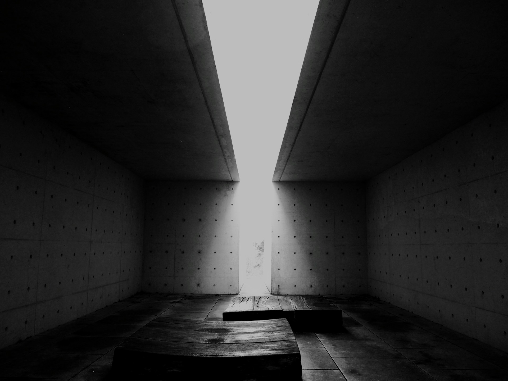

STILLFORM
An archive of
spatial observations

Builtaroundabsence.
Architecture defines
the space that is not built.
Tulach a’ tSolaisOulart Hill, Ireland
Photograph by E Vos
on Unsplash
on Unsplash
An archive of
spatial observations

Architecture defines
the space that is not built.